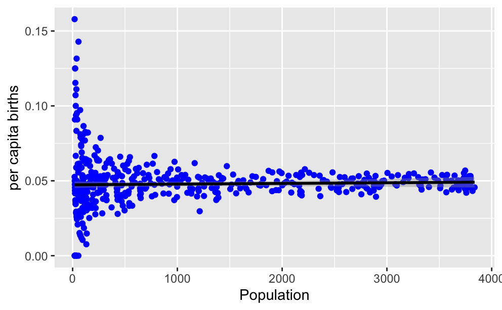
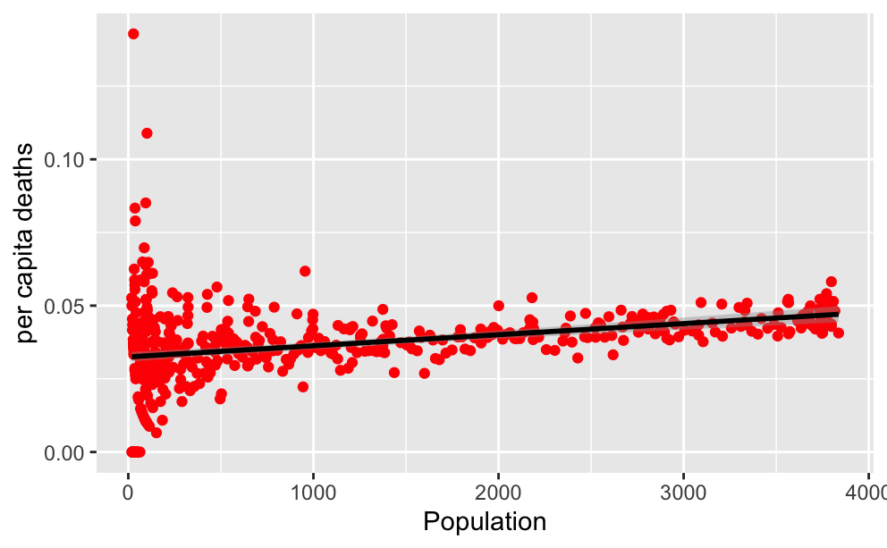
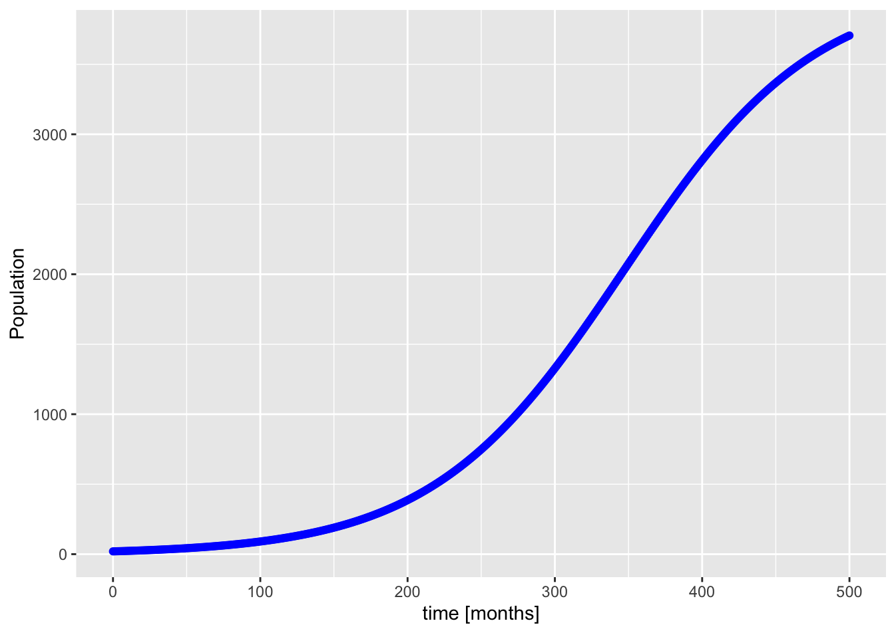
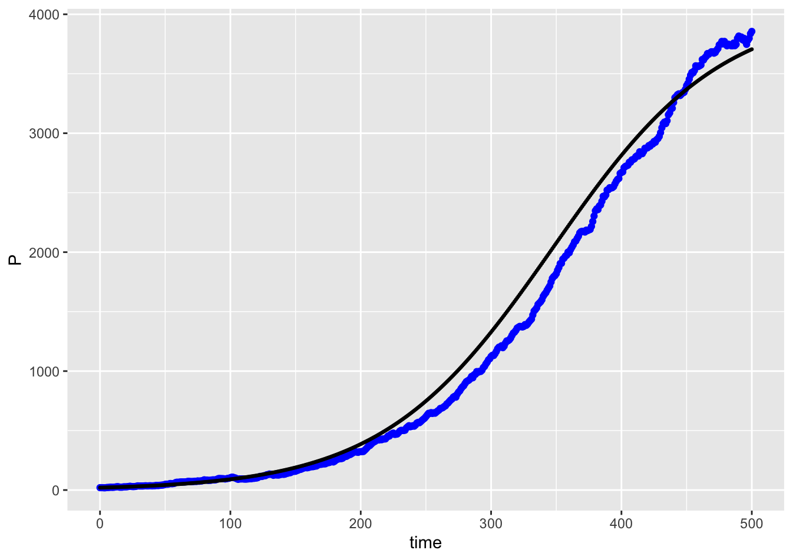

Section 2.3 Density Dependent Population Growth Models
A population with constant per capita growth rates sees exponential growth when the birth rate \(b\) exceeds the death rate \(d\text{,}\) and exponential decay when the ordering is reversed. However, real population can not really grow exponentially as there iare limited resources in the environment. Thus, for populations that experience environmental constraints, constant per capita growth rates are not appropriate.
We previously defined the per capita net growth rate \(r=b-d\) where \(b\) is the per capita birth rate and \(d\) is the per capita death rate. Sometimes it is inconvenient or impossible to determine the birth and death rates separately. If we can at least measure the net change in the population, which will be equal to \(\Delta P_{n+1} = B_{n+1}-D_{n+1}\text{,}\) then the per capita net growth rate will be a sequence defined by
\begin{equation*}
r_{n+1} = \frac{\Delta P_{n+1}}{P_{n}}.
\end{equation*}
Density dependence means that the relation \((P_n, r_{n+1})\) is not constant, but that \(r_{n+1}\) depends on \(P_n\text{.}\)
We turn our attention to the case that the per capita net growth rate can be modeled as a function of the population size \(P_n\text{,}\) where a scatter plot of the points \((P_n, r_{n+1})\) could be reasonably approximated by a function. We generally expect that the graph will be a decreasing function because as the population gets larger, the growth rate should decrease. For a very large population, we expect \(r \lt 0\) since the population would be greater than its carrying capacity. Physically, however, we will always have \(r \ge -1\text{,}\) with \(r=-1\) corresponding to complete extinction.
If we revisited the density-dependent agent-based model in Section Subsection 2.1.3, we can plot the per capita net growth rate computed at each time step with respect to the size of the population at the beginning of the step. We will actually start with the per capita birth and death rates, \(b = B/P\) and \(d = D/P\text{.}\)
library(readr) # To load CSV files (read_csv)
library(dplyr) # To reorganize (select)
library(ggplot2) # To work with graphs (ggplot)
# Import the data
# Then select only columns 1, 2, 6, 10
# Then add a column for P_start
# Then add more columns for per capita
# Then save the result as our data
read_csv("density-dependent-population-graph-export.csv",
skip = 19, col_names = FALSE) |>
select(tick = 1, P_end = 2, B = 6, D = 10) |>
mutate(P_start = P_end - B + D) |>
mutate(b = B/P_start, d = D/P_start) ->
density_data
# Create a graph for per capita births
ggplot(data = density_data
mapping = aes(x = P_start, y = b) +
geom_point(color = "blue") +
geom_smooth(method = "lm", formula = y ~ x, color = "black") +
labs(x = "Population", y = "per capita births")
# Create a graph for per capita deaths
ggplot(data = density_data
mapping = aes(x = P_start, y = d) +
geom_point(color = "red") +
geom_smooth(method = "lm", formula = y ~ x, color = "black") +
labs(x = "Population", y = "per capita deaths")


Based on our result, it would appear that the per capita birth rate is constant with respect to the population size. But the per capita death rate is an increasing linear function of the population size. This should make sense based on how the simulation was generated, because that is exactly what happened. We can use R to estimate the parameters of the constant per capita birth rate and the coefficients of the line for the per capita death rate.
# per capita birth has no dependence on P_start, just y-intercept
b_model <- lm(formula = b ~ 1, data = density_data)
b_model$coefficients
(Intercept) 0.04787737
# per capita death has linear dependence on P_start
d_model <- lm(formula = d ~ P_start, data = density_data)
d_model$coefficients
(Intercept) P_start 3.249201e-02 3.796575e-06
The overall per capita growth rate can then be found,
\begin{equation*}
r = \frac{B-D}{P} = \frac{bP - dP}{P} = b - d\text{,}
\end{equation*}
as the difference of the per capita birth rate minus the per capita death rate. In order to develop an actual model, we need to find a formula that captures the relation. The per capita birth rate in our example was constant, which we can just represent by the parameter \(b\text{.}\) The per capita death rate was an increasing linear function of population, so we need two parameters for the intercept and slope of that function,
\begin{equation*}
d = d_0 + a P\text{.}
\end{equation*}
The value \(d_0\) is the per capita death rate when there are no individuals around. The value \(a\) represents the additional probability of death per individual added to the population. With these formulas, we can no calculate the per capita growth rate,
\begin{equation*}
r = b - d = b - (d_0 + a P) = (b-d_0) - a P\text{.}
\end{equation*}
If we defined \(r_0 = b - d_0\) as the per capita growth rate in the absence of individuals, then we see that \(r\) is a decreasing linear function of \(P\text{,}\)
\begin{equation*}
r = r_0 - a P\text{.}
\end{equation*}
Specifically for our simulation, our estimates for the parameters are \(b = 0.047877\) and \(d = 0.032492 + 3.7966 \times 10^{-6} P\text{,}\) so that \(r_0 = 0.015385\) and \(a = 3.7966 \times 10^{-6}\text{.}\)
Once we have our model formula for \(r\text{,}\) we can use it to create a model for the population itself. The new population \(P_{n+1}\) will be found by taking the old population \(P_n\) and adding the net change in population \(B_n - D_n = r P_n\text{.}\) This gives us the basic model equation
\begin{equation*}
P_{n+1} = P_n + r P_n\text{.}
\end{equation*}
We now use the model formula for \(r\text{,}\) which itself depends on \(P_n\) (in place of \(P\)), to give
\begin{equation*}
P_{n+1} = P_n + (r_0 - a P_n) P_n\text{.}
\end{equation*}
Distributing out the \(P_n\) on the right, we arrive at a model equation,
\begin{equation*}
P_{n+1} = P_n + r_0 P_n - a P_n^2\text{,}
\end{equation*}
where \(r_0 \ge -1\) and \(a > 0\) are the model parameters.
This model is a classic model in mathematical biology called the discrete logistic model, and it is an example of a nonlinear dynamic model. It is called nonlinear because the formula for \(P_{n+1}\) is not just a linear function of \(P_n\) due to the presence of the squared term \(a P_n^2\text{.}\) Nonlinear models generally do not have known explicity solutions. But we can implement numerical approximations through iteration.
library(tidyr)
library(ggplot2)
# Set model parameters
b <- 0.04788
d0 <- 0.03249
r0 <- b - d0
a <- 3.797e-6
# Initial value
P0 = 20
dt = 1
# Set aside space for sequence values
N_pts <- 501 # How many points we want, including initial
t_vals <- double(N_pts)
P_vals <- double(N_pts)
# First cycle starting values
t_vals[1] <- 0
P_vals[1] <- P0
# Iterate through the model for remaining values
for (n in 2:N_pts) {
# New time is previous time + dt
t_vals[n] <- t_vals[n-1] + dt
# New population using model
P_vals[n] <- P_vals[n-1] * (1 + r0 - a * P_vals[n-1])
}
# Plot the population
data2 <- tibble(t = t_vals, P = P_vals)
ggplot(data2, mapping = aes(x = t, y = P)) +
geom_point(color = "blue") +
labs(x = "time [months]", y = "Population")

Below is a live Sage cell which can run self-contained R code. It can not support loading external files, so we can’t use it with our CSV files. But it can do the simulation above if you copy the code into the cell and the press the
Evaluate button. You also can try changing some of the parameters in the model to see how the dynamics change.We are likely curious about how well the model matches the data that motivated it. Assuming that you have both the imported data from NetLogo and the simulation calculated above in the same R session, we can combine the graphs of the two datasets into a single figure. The results shown in Figure 2.3.7 show a clear resemblance between the NetLogo simulation data with the modeled sequence. The demographic stochasticity of the NetLogo simulation as well as the estimated nature of our model parameters explain the discrepancies between the two models.
# Two datasets, so the global source of data is NULL
ggplot(data=NULL, mapping=aes(x = "time", y = "P")) +
# Each geometric layer specifies its own data set.
geom_point(data=netlogo_data, mapping = aes(x=X1, y=X2), color="blue") +
geom_point(data=data2, mapping = aes(x=t, y=P), color="black", size=0.5) +
labs(x = "time", y = "P")
